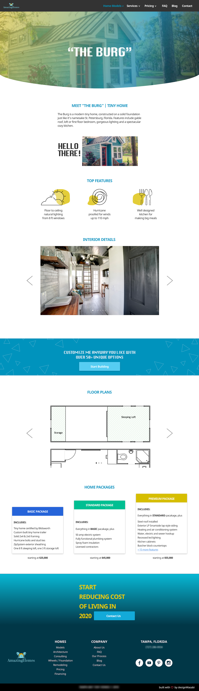
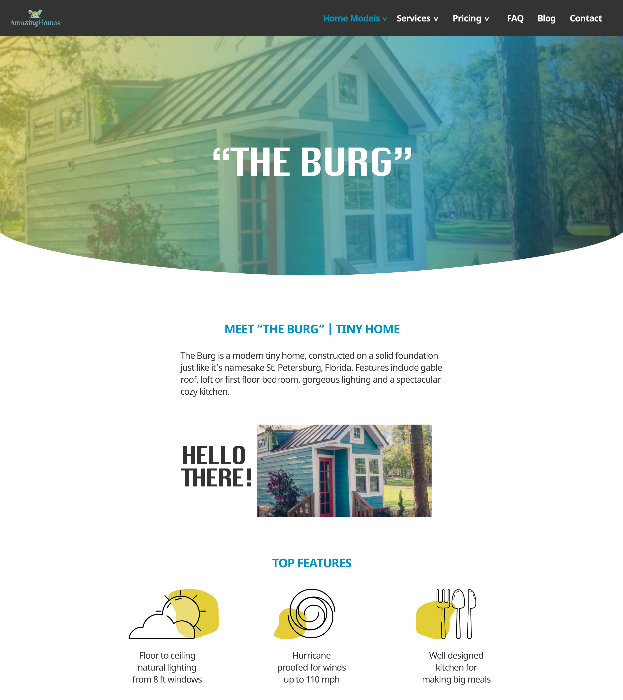
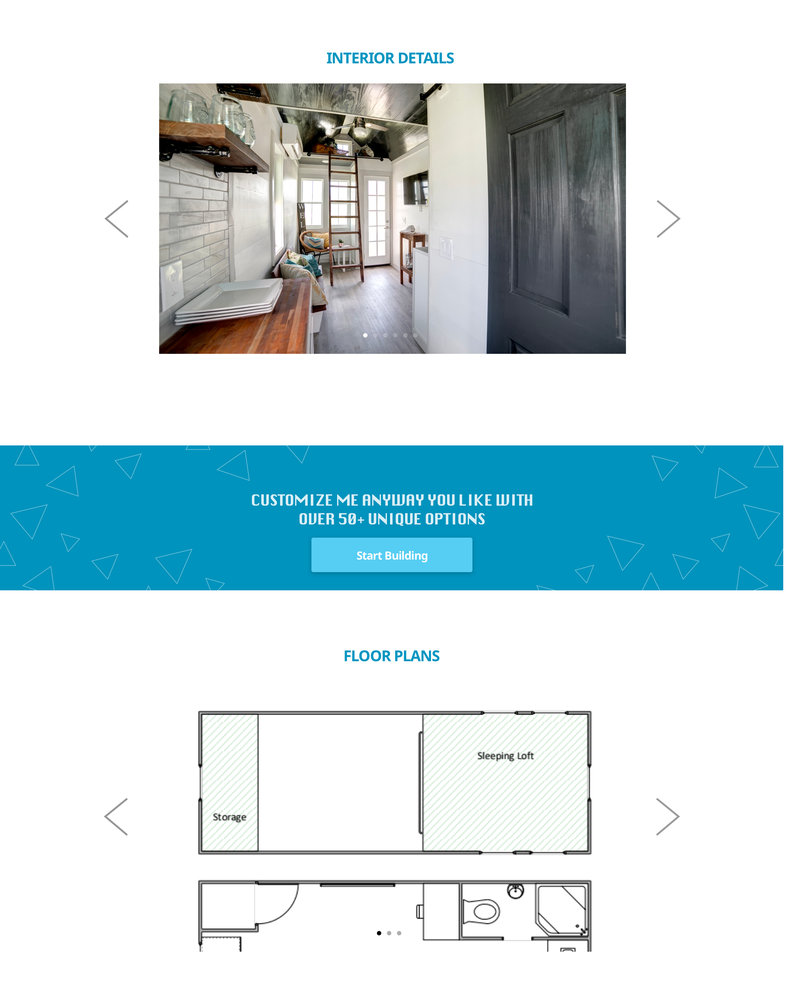
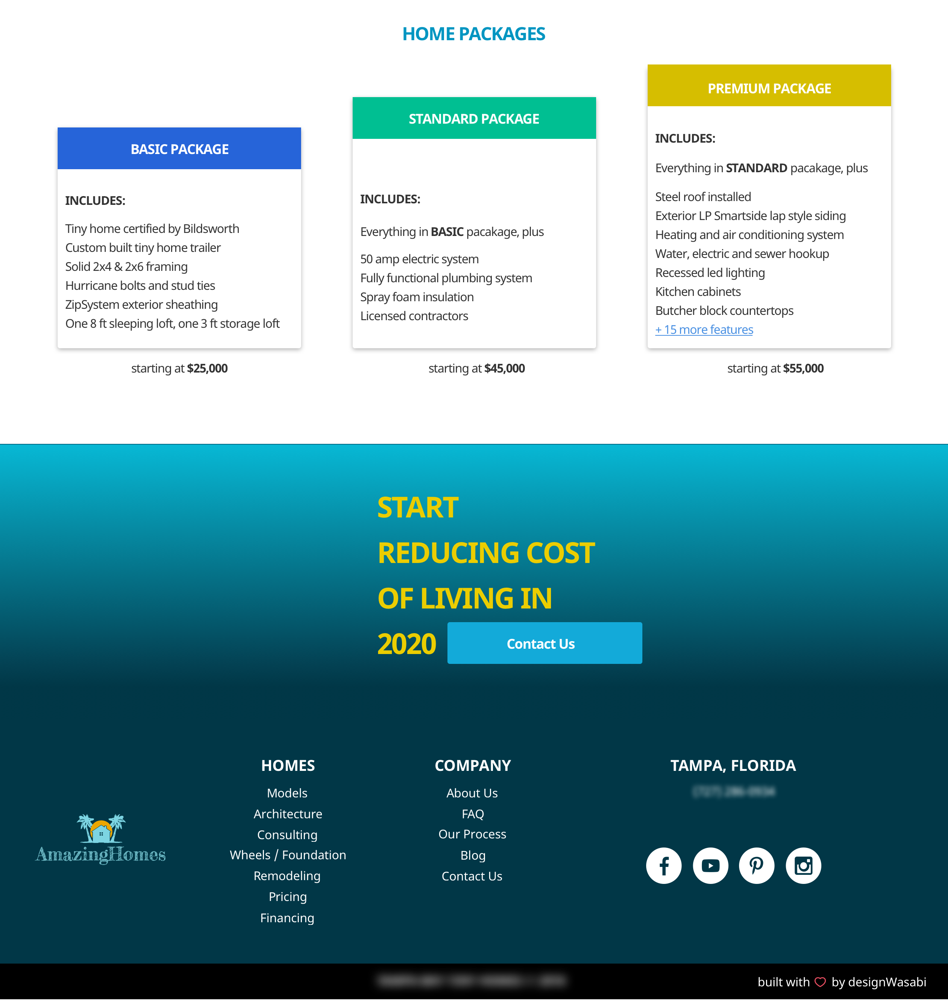

Real Talk: Throughout history some have argued that small businesses are the “backbone” of the American economy. However, few small businesses can afford to hire tech/design teams to build out beautifully constructed websites. The founders know they need a website so they do the best they can with their resources. I saw an opportunity to help and support small business by providing brief, complimentary design audits supported by sample re-designs and detailed suggestions.
My work consists of changes that include:
- visual design
- information architecture
- copy
- assets
- design thinking
- and a large (gigantic) pinch of psychological understanding and reasoning
Occasionally, I’ll do qualitative research like A/B testing to validate my changes. Of course, the work I’m doing is limited by lack of quantitative data. When hired for contract or salaried work then I make an effort to encourage google analytics for more accurate and effective design changes. Please note: When I post these projects publically, I make an effort to redact business details (i.e. logo, phone numbers, address).
Redesigned Sections: The Before
- Product Detail Page
- Services
- Contact Form Interaction
Redesigned Sections: The After
Included below are picture examples, explanations, and resources that help support my design decisions.
 The final productProduct Page: Hero
- Reduced the navigation items for scannability and easier choice (Hick’s Law)
- Positioned first and last nav items to convey importance (Serial Position Effect)
- Quick intro and brief features at the top of page for memory recall (Hick’s Law)
- Used casual language to mirror the type of product sold and color scheme
- Features sections is built like a list and the copy is brief and precise
- Integrated visually appealing colors, shades, and fonts (Aesthetic Usability-Effect)
- Lots of white space to support focus and reduce overwhelming feelings
Product Page: Visual Assets
 To comabt loss of interests, images were placed in the mid-section- Intentionally placed as middle section to convey less importance
- Gallery slider: saves space and it’s familiar design for users
- Mid-page CTA for users with early interests
Product Page: Final CTA and Footer
 Tiered pricing and features demonstrated by differentiating heights- Conveyed visual importance and cost with height of packages
- Less emphasis on price since it’s only an estimate
- Displayed an estimate to be transparent and attract the motivated users
- Reduced the copy in each package to be scannable and incremental
- Final CTA placed last to anticipate user’s needs
- Footer includes nav items that were removed/hidden from top nav
Contact Us Form: Default State
 Modified form to only include required fields and clickable
options
Modified form to only include required fields and clickable
options
- Standard practice for forms is single file layout for input fields
- Reduced a need for typing by removing “optional” items and inserting button selection when possible
- Users value transparency and dislike false claims of “free quotes” so an estimator is provided to give users a ballpark idea of their project cost
- Kept the form short to reduce abandonment and user frustration
- White space and light shadows provide users with visual feedback
Contact Us Form: Datepicker
 Datepicker provides users easy selection of tour dates
Datepicker provides users easy selection of tour dates
- Bold font weight for complete input is readable and expected
- Input titles move above the line and remains visible while user inputs data
- Clicked buttons change color and reassure the user of their selection
- Date picker for house tours uses clicks only
- User can tab through most of the form
Contact Us Form: Estimate Confirmation
 modal reinforces to user that estimates are not final prices
modal reinforces to user that estimates are not final prices
- Modal reduces need for another page load and relates directly to user's previous actions
- User confirms the price given is an estimate only to reduce conflicting follow up calls
- Neither one of the buttons are colorful because we want users to slow down and select intentionally vs. feeling coerced into a choice
- Background is darkened to keep user focused on the current task
- Individual words are highlighted in color to emphasize importance of details
Contact Us Form: Confirmed Form Submission
 instant and clear feedback to user once user submits the form
instant and clear feedback to user once user submits the form
- Confirmation box is feedback to the user that the form was sent successfully so users do not have to wonder if it was received
- Included names of follow-up consultants for a warmer more human interaction
- Final 2 buttons gives users a choice of direction and keeps them on the website browsing
- By default if user selects “X” to close modal it will redirect to the homepage
- User is given options to click buttons or “X” because choice/control is important